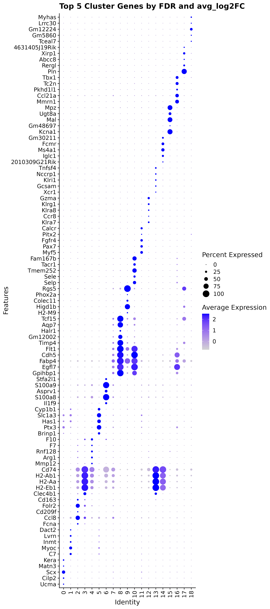
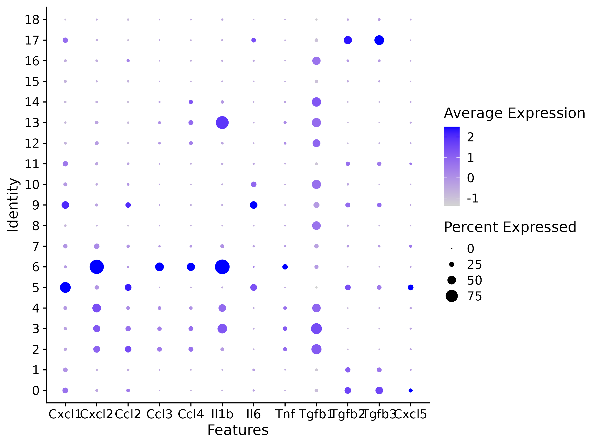

Workflow Overview

Introduction
To interpret our initial clustering results for all cells in our
experiment, we’ll need to characterized the gene expression driving
separation between the clusters.
In this section, we will demonstrate how to generate analytical
marker genes for each cluster and how to visualize the expression of
genes of interest to aid in cluster identification and labeling in
subsequent steps.
This process can be a highly variable process, from seeing
well-characterized marker genes as top markers to needing to dig through
the literature and plot the expression for multiple sets of genes of
interest. Like the previous sections (and like other areas of research),
when this process is more involved or iterative, often only the final
results are reported.
Objectives
- Determine gene markers for each of the clusters using
FindAllMarkers()
- Visualize expression across clusters for genes of interest using
DotPlot()
Cluster markers and characterization
After generating clusters, we need to perform differential expression
analysis to identify the genes that distinguish those clusters (source).
This should allow us to get visibility on some key questions for our
clusters, as highlighted
by the HBC materials, namely:
- Are there are biologically meaningful gene expression differences
between the clusters?
- Does the gene expression of the generated clusters correspond to
expected cell-types or sub-types?
- Are there clusters with similar expression that should be combined
and/or clusters that might need to be sub-clustered into smaller
populations?
Many of the differential expression (DE) tools designed for bulk
RNA-seq samples have been benchmarked for performance on scRNA-seq in Soneson and Robinson
(2018) and there are also dedicated DE tools for scRNA-seq, like MAST,
that use models that account for the expected sparse structure of
scRNA-seq data. However in our and others’ experience, the default
Wilcoxon test is often sufficient for simple pairwise DE comparisons,
while edgeR (Robinson, McCarthy, and
Smyth 2010) is recommended by the Ouyang
Lab for more complex comparison designs, such as those that include
covariates.

Image: Comparison of the performance of DE
methods applied to scRNA-seq datasets. Methods are ranked by their
average performance across all the listed criteria. Image taken from
Soneson and Robinson (2018).
Additional considerations for differential expression
The Ouyang Lab has a section
of their tutorial that discusses the methods available for
differential expression including some highlighted in the figure below,
as well as a more extensive section on threshold
considerations, while the HBC
section on marker genes identification highlights the different
types of marker identification options available via Seurat.
Marker identification
First, we’ll ensure that the correct resolution is selected from our
Seurat object and then we’ll use the PrepSCTFindMarkers()
function
in preparation for DE comaprisons to “reverse the individual SCT
regression model using minimum of median UMI as the sequencing depth
covariate” according to the Seurat
documentation
Then we’ll run theFindAllMarkers() function
to generate comparisons between each cluster and all other cells,
regardless of the experimental group. Note - the statistical test to
perform can be specified in FindAllMarkers(), but the
default is a Wilcoxon test.
# prep for cluster comparisons
geo_so = SetIdent(geo_so, value = 'integrated.sct.rpca.clusters')
geo_so = PrepSCTFindMarkers(geo_so)
# run comparisons for each cluster to generate markers
geo_markers = FindAllMarkers(geo_so, only.pos = TRUE)
# Take a look at the first few rows of the result
head(geo_markers)
# write out full cluster marker results to file
write_csv(geo_markers, file = 'results/tables/marker_genes_0.4.csv')
p_val avg_log2FC pct.1 pct.2 p_val_adj cluster gene
Col12a1 0 3.941779 0.927 0.141 0 0 Col12a1
Tnc 0 3.702778 0.848 0.112 0 0 Tnc
Thbs2 0 3.639909 0.901 0.169 0 0 Thbs2
Lox 0 2.897164 0.915 0.185 0 0 Lox
Aebp1 0 2.179345 0.978 0.281 0 0 Aebp1
Cthrc1 0 3.583623 0.954 0.264 0 0 Cthrc1
Seurat v5 improvements
For marker generation, Seurat v5 uses the presto
package to reduce the time required to run DE comparisons,
particularly for large datasets. For users who are not using presto,
Seurat recommends increasing the min.pct and logfc.threshold
parameterscto increase the speed of DE testing (source).
Note that over-interpretation of these results should be avoided,
since each cell is used as a replicate in these comparisons which can
lead to inflated (e.g. very low) p-values, the top markers are more
likely to be trustworthy (source).
Therefore, it’s useful to filter the results to highlight the top
positive markers (since a positive fold-change would mean that gene is
more highly expressed in the cluster compared to all other cells),
before looking at our results
# create table of top 5 markers per cluster
top_5_by_log2FC = geo_markers %>% group_by(cluster) %>% arrange(p_val_adj, desc(avg_log2FC)) %>% slice_head(n = 5)
# look at results
head(top_5_by_log2FC)
# A tibble: 6 × 7
# Groups: cluster [2]
p_val avg_log2FC pct.1 pct.2 p_val_adj cluster gene
<dbl> <dbl> <dbl> <dbl> <dbl> <fct> <chr>
1 0 5.79 0.086 0.004 0 0 Ucma
2 0 5.62 0.132 0.005 0 0 Cilp2
3 0 5.56 0.437 0.016 0 0 Scx
4 0 5.45 0.084 0.003 0 0 Matn3
5 0 5.30 0.137 0.007 0 0 Kera
6 0 5.15 0.238 0.01 0 1 C7
We expect to see several columns:
gene: gene symbolp_val: p-value not adjusted for multiple test
correctionavg_logFC: average log fold change. Positive values
indicate that the gene is more highly expressed in the cluster.pct.1: percentage of cells where the gene is detected
in the clusterpct.2: percentage of cells where the gene is detected
on average across all other clustersp_val_adj: adjusted p-value based on bonferroni
correction using all genes in the dataset, used to determine
significancecluster: cluster represented by pct.1 and
for which the statistics in the row are reported
When looking at the output, it is important to prioritize marker
genes with both larger fold-change differences and larger difference
between pct.1 and pct.2, particularly if pct.1 is high (e.g. if 80% of
cells in the cluster evaluated express the gene that more reliable than
if only 20% of cells express that gene) (source).
Marker visualization
Now that we have generated a set of marker genes for our clusters, it
is useful to visualize the expression of those markers to aid in
evaluating them. While the expression of individual genes per cell can
be overlaid on our UMAPs (as with the FeaturePlot() function),
it’s often more useful to visualize the expression of multiple genes
simultaneously. While there are multiple
methods supported by Seurat for visualizing marker gene expression,
a heatmap or a related plot called a dotplot are commonly used.
We’ll use the DotPlot() function with
the SCT values to visualize the top 5 marker genes per cluster:
# generate plot
top_5_sct_dot_plot = DotPlot(geo_so, features = unique(top_5_by_log2FC$gene)) +
theme(axis.text.x = element_text(angle = 90, hjust = 1, vjust = 0.5)) +
labs(title = 'Top 5 Cluster Genes by FDR and avg_log2FC') + coord_flip()
top_5_sct_dot_plot
# save Dotplot to file
ggsave(filename = 'results/figures/markers_top_5_sct_dot_plot.png', plot = top_5_sct_dot_plot, width = 8, height = 18, units = 'in')
In the dotplot we can see that the color indicates the expression of
the gene while the size of the dot indicates the proportion of cells
expressing that gene in each cluster (source).

Figure: Dotplot of top 5 markers per
cluster
Using raw RNA values in Dotplots
In addition to plotting the SCT values, the raw or normalized RNA
values can be plotted as well:
top_5_rna_dot_plot = DotPlot(geo_so, features = unique(top_5_by_log2FC$gene), assay = 'RNA') +
theme(axis.text.x = element_text(angle = 90, hjust = 1, vjust = 0.5)) +
labs(title = 'Top 5 Cluster Genes by FDR and avg_log2FC') + coord_flip()
ggsave(filename = 'results/figures/markers_top_5_rna_dot_plot.png', plot = top_5_rna_dot_plot, width = 8, height = 18, units = 'in')
Utilizing genes of interest
Often we have prior information about what cell types are expected in
our samples and key marker genes for those populations. This can be an
important part of evaluating our clusters, since if genes that are known
markers for a specific cell type are found in too many or too few
clusters as that can suggest that re-clustering is needed or that some
of the clusters should be manually combined before annotating.
We can create lists of markers used in figures from the original
paper before using the same DotPlot() function to
visualize the expression level and frequency of these genes in our
current clusters:
# manually create lists of genes from paper
fig1g_markers = c('Cxcl1', 'Cxcl2', 'Ccl2', 'Ccl3', 'Ccl4', 'Il1b', 'Il6b', 'Tnf', 'Tgfb1', 'Tgfb2', 'Tgfb3', 'Cxcl5')
fig1h_markers = c('Cxcr2', 'Csf1r', 'Csf3r', 'Tgfbr1', 'Tgfbr3', 'Il1r1', 'Il6ra', 'Lifr', 'Tgfbr2')
# create DotPlots for genes from paper
fig1g_sct_dot_plot = DotPlot(geo_so, features = fig1g_markers, assay = 'SCT')
fig1h_sct_dot_plot = DotPlot(geo_so, features = fig1h_markers, assay = 'SCT')
fig1g_sct_dot_plot
# save plots to file
ggsave(filename = 'results/figures/markers_fig1g_sct_dot_plot.png', plot = fig1g_sct_dot_plot, width = 8, height = 6, units = 'in')
ggsave(filename = 'results/figures/markers_fig1h_sct_dot_plot.png', plot = fig1h_sct_dot_plot, width = 8, height = 6, units = 'in')

Using raw RNA values for genes of interest
We can also generate the same plots, but using the unintegrated data
by specifying the RNA assay:
rna_dot_plot = DotPlot(geo_so, features = fig1g_markers, assay = 'RNA')
fig1h_rna_dot_plot = DotPlot(geo_so, features = fig1h_markers, assay = 'RNA')
ggsave(filename = 'results/figures/markers_fig1g_rna_dot_plot.png', plot = fig1g_rna_dot_plot, width = 8, height = 6, units = 'in')
ggsave(filename = 'results/figures/markers_fig1h_rna_dot_plot.png', plot = fig1h_rna_dot_plot, width = 8, height = 6, units = 'in')
For known marker genes, it’s important to note that since scRNA-seq
is only measuring transcriptional signals that markers at the protein
level (e.g used for approaches like FACS) may be less effective. An
alternative or complement to using marker genes could be methods like
using gene set enrichment (GSEA) as
demonstrated in the OSCA book to aid in annotations. However, the
book “Best
practices for single-cell analysis across modalities” by Heumos, Schaar,
Lance, et al. points out that “it is often useful to work together
with experts … [like a] biologist who has more extensive knowledge of
the tissue, the biology, the expected cell types and markers etc.”. In
our experience, we find that experience and knowledge of the researchers
we work with is invaluable.
Save our progress
Finally, we’ll create an output file for our updated Seurat object
and for the cluster marker results:
saveRDS(object = geo_so, file = 'results/rdata/geo_so_sct_integrated_with_markers.rds')
saveRDS(object = geo_markers, file = 'results/rdata/geo_markers.rds')
Summary
Now that we have characterized the expression of both analytical
marker genes and literature / knowledge-based marker genes, we may have
a better sense of what cell-types or subtypes our clusters might
correspond to.
However, marker genes alone might not be sufficient to determine
cell-type or sub-type labels for our clusters so we will discuss other
more automated approaches to complement these results.
Next steps: Cell type prediction tools
These materials have been adapted and extended from materials listed
above. These are open access materials distributed under the terms of
the Creative
Commons Attribution license (CC BY 4.0), which permits unrestricted
use, distribution, and reproduction in any medium, provided the original
author and source are credited.
